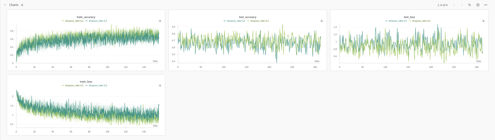
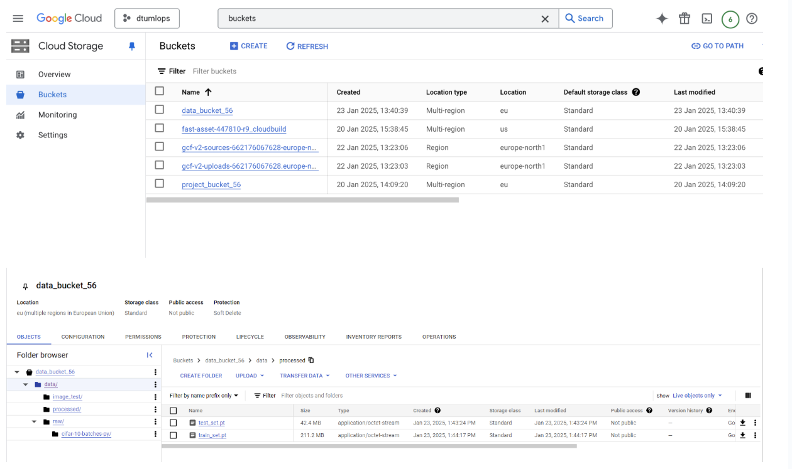
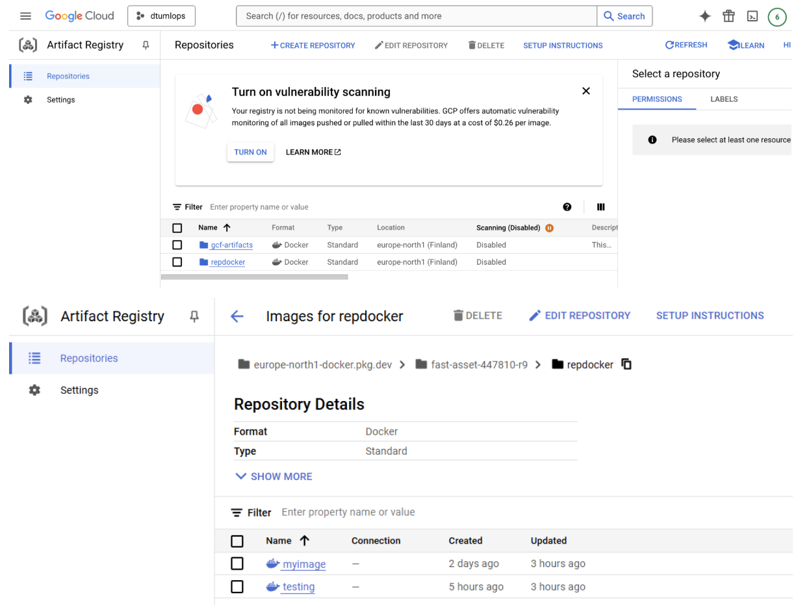
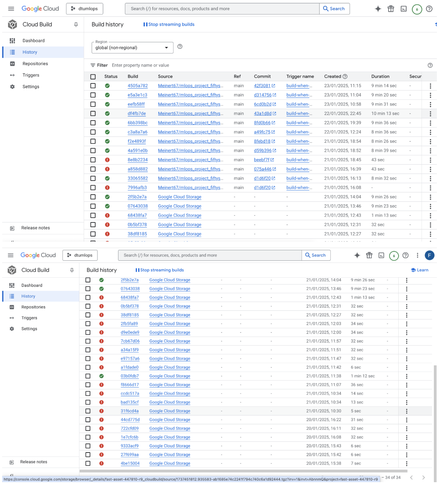
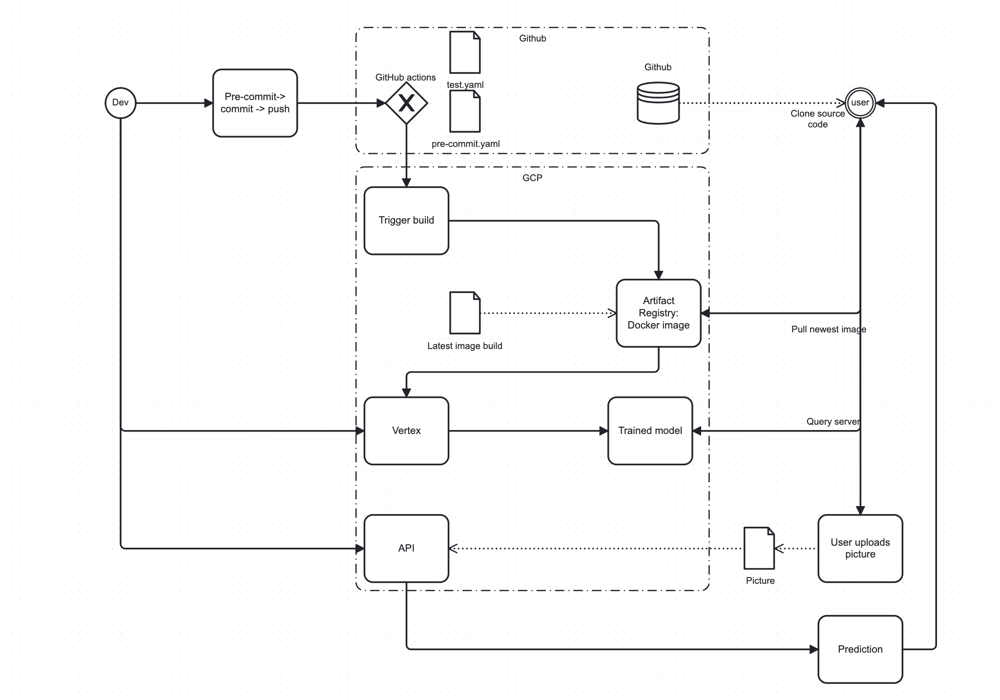

34" tags: []
This is the report template for the exam. Please only remove the text formatted as with three dashes in front and behind like:
--- question 1 fill here ---
Where you instead should add your answers. Any other changes may have unwanted consequences when your report is
auto-generated at the end of the course. For questions where you are asked to include images, start by adding the image
to the figures subfolder (please only use .png, .jpg or .jpeg) and then add the following code in your answer:
markdown

In addition to this markdown file, we also provide the report.py script that provides two utility functions:
Running:
bash
python report.py html
Will generate a .html page of your report. After the deadline for answering this template, we will auto-scrape
everything in this reports folder and then use this utility to generate a .html page that will be your serve
as your final hand-in.
Running
bash
python report.py check
Will check your answers in this template against the constraints listed for each question e.g. is your answer too short, too long, or have you included an image when asked. For both functions to work you mustn't rename anything. The script has two dependencies that can be installed with
bash
pip install typer markdown
The checklist is exhaustive which means that it includes everything that you could do on the project included in the curriculum in this course. Therefore, we do not expect at all that you have checked all boxes at the end of the project. The parenthesis at the end indicates what module the bullet point is related to. Please be honest in your answers, we will check the repositories and the code to verify your answers.
data.py file such that it downloads whatever data you need and preprocesses it (if necessary) (M6)model.py and a training procedure to train.py and get that running (M6)requirements.txt and requirements_dev.txt file with whatever dependencies that you
are using (M2+M6)pep8) while doing the project (M7)Enter the group number you signed up on
Answer: 56
Enter the study number for each member in the group
Answer: s203729, s236120, s234867 and s234829.
A requirement to the project is that you include a third-party package not covered in the course. What framework did you choose to work with and did it help you complete the project?
Recommended answer length: 100-200 words.
Answer: We chose to use the third-party Python package seaborn in our project. This was used to create an easy-to-read confusion matrix using the built-in function seaborn.heatmap(). This created a nice overview in our reports/figures/evaluation_heatmap.png for our model’s classification performance. Seaborn is a Python package that builds on the popular Python package Matplotlib, for creating visuals with information. Our reason for choosing this package was to provide us with an easy-to-use solution for visualizing our model’s performance, which was put in our evaluate.py file.
Our main framework is pytorch. We have chosen to use pytorch lightning as well to build our model on. Seaborn adds something neither of these frameworks do, without interfering with their functionality.
Explain how you managed dependencies in your project? Explain the process a new team member would have to go through to get an exact copy of your environment.
Recommended answer length: 100-200 words.
Answer: Through the project we’ve used the file requirements.txt, from the cookiecutter template to manage our dependencies. The list of dependencies was auto-generated using pipreqs throughout the project. One way to get a complete copy of our development environment, one could do that is to run the following commands; first cloning the github repository, so the new group member have all the files, then running pipreqs to ensure everything in the requirements is up to date, which it should be and then install the pip install -r requirements.txt. All of this is looking away from docker and google cloud, but it is assumed that the team member will have a separate intro to use those tools later:))
We expect that you initialized your project using the cookiecutter template. Explain the overall structure of your code. What did you fill out? Did you deviate from the template in some way?
Recommended answer length: 100-200 words.
Answer: We started the project by using the cookiecutter template from the course. We have followed the structure without any major deviation. The main part of our code is placed in src/project. Our data is in the data folder. Our dockerfiles and cloudbuild are in dockerfiles. The configs folder is for the hydra config and a vertex ai cpu config. Our trained model is in models. And so on. We have not used the folder notebooks. We added a .gcloudignore which is the same as the .gitignore except that the data was not ignored, when pushing to the cloud. This was so we could add the data to our cloud bucket. Some of our packages add folders, like hydra, which adds the output folder and wandb adds its own folder to keep track of the runs and configurations.
Did you implement any rules for code quality and format? What about typing and documentation? Additionally, explain with your own words why these concepts matter in larger projects.
Recommended answer length: 100-200 words.
Answer: In our project, we used ruff version 0.1.3 for linting and formatting. Ruff is run in the pre-commit-config.yaml, and streamlines the code for the entire project. Furthermore, we made sure to follow the styleguide pep8 for our Python code in order to make our code better and more readable. Readable code is essential in larger multi-developer projects. This is because creating code in a predefined readable way ensures that the developers can read each other's code with little effort. In addition to this, it’s important to document functions and important parts of your code with comments. This is crucial for explaining complex functions and solutions in your code.
How many tests did you implement and what are they testing in your code?
Recommended answer length: 50-100 words.
Answer: It was important for us to implement tests that made sure our data and model worked as intended. To begin we created test_data.py which tests for the correct amount of image in the train and test dataset. Furthermore, it also checks for the correct amount of training targets in the dataset. The file test_model.py creates and runs the model with a random input, and checks for the correct size of the model output.
What is the total code coverage (in percentage) of your code? If your code had a code coverage of 100% (or close to), would you still trust it to be error-free? Explain your reasoning.
Recommended answer length: 100-200 words.
Answer: The total code coverage of our code is 80%, which includes tests for our data.py and model.py. While 80% is not a total coverage of our source code, it is a reasonably high code coverage, which is a good indicator that we have tested our code. Even with a hundred percent code coverage there is no guarantee that the code would be bug free and therefore there is no guarantee that there are no errors or bugs. However, hopefully the high code coverage has helped us with limiting these slightly. The total code coverage was obtained through running coverage run -m pytest tests/ which runs our tests in the tests folder, and gives a percentage of how much of the source code files is run through in our tests.
Did your workflow include using branches and pull requests? If yes, explain how. If not, explain how branches and pull requests can help improve version control. Recommended answer length: 100-200 words.
Answer: To simplify our workflow we chose not to use other branches than the main branch. This worked due to our group's minimal size, however in larger teams, there is a lot to benefit from using personal branches or feature branches for a larger assignment. When in larger groups using branches works as an extra layer of protection that protects our code by preventing the different members from overwriting each other's code. We would therefore have chosen personal branches if not for our minimal group size. Furthermore we could by using pull requests add a layer of safety since the changes are only applied after review and testing. Being completely honest this way of working led to more need of communication and one or two slight mix-ups in git pull/pushes, which have taught us the values of branches the hard way.
Did you use DVC for managing data in your project? If yes, then how did it improve your project to have version control of your data. If no, explain a case where it would be beneficial to have version control of your data.
Recommended answer length: 100-200 words.
Answer: Data version control in this course was a bit of a bumpy road. Since the part with google drive had been removed from the curriculum in the start of the course, we’ve only started using dvc when working with google cloud. We ended up making use of gsutil instead through the Google storage extension (gs) adding files to our repository/bucket. If we have had more changing data or had it originally stored in google drive dvc could have helped us tracking and versioning and could have had an even bigger role if we had worked with larger datasets (and models). For controlling the data and model reproducibility part of our pipeline it can be a nice extension to git, where github takes care of the code part, google cloud takes care of the data and models.
Discuss your continuous integration setup. What kind of continuous integration are you running (unittesting, linting, etc.)? Do you test multiple operating systems, Python versions etc. Do you make use of caching? Feel free to insert a link to one of your GitHub actions workflow.
Recommended answer length: 200-300 words.
Answer: We implemented continuous integration into our project. Specifically we created unittesting in test_data.py and test_model.py. Furthermore we implemented a linting step using ruff --fix in the pre-commit-config.yaml file, to improve our source code readability. We created a workflow that automatically runs the pre-commit upon pushing to git.
Lastly our workflow file, tests.yaml, is responsible for installing the necessary Python packages using pip. The necessary packages would be read from the requirements.txt and requirements_dev.txt and then installed in the virtual environment. We use pip caching. Once the necessary modules are installed, the unit testing begins using pytest, and a check for code coverage would be run. It was important for us that these tests work on the stable version of Python version 3.12. In addition, tests would be run on these separate operating systems: ubuntu-latest, windows-latest and macos-latest. This ensures that the project works on all three of the popular operating systems. These tests can be viewed under Actions in GitHub.
Continuous integration is a sub-discipline of Continuous X. Continuous integration takes care of the first part of the developer pipeline, which has to do with the code base and code testing. This is crucial for projects to catch errors or bugs early on via these tests.
An example of a triggered workflow can be seen here: Changed pre-commit · Meinert67/mlops_project_fiftysix@d314756
How did you configure experiments? Did you make use of config files? Explain with coding examples of how you would run an experiment.
Recommended answer length: 50-100 words.
Example: We used a simple argparser, that worked in the following way: Python my_script.py --lr 1e-3 --batch_size 25
Answer: In our project, we made use of config files. Specifically we have config.yaml and config_cpu.yaml. The former is used for configuring the hyperparameters for training our model. This includes bath_size, epochs, learning_rate, dropout_rate and HYDRA_FULL_ERROR. The latter is used for setting up vertex AI in google cloud. Vertex can be used to train the model.
We did not implement an argparser, since config files were sufficient.
Reproducibility of experiments is important. Related to the last question, how did you secure that no information is lost when running experiments and that your experiments are reproducible?
Recommended answer length: 100-200 words.
Answer: To ensure our experiments are reproducible, we made use of config files to ensure that the parameters were the same. When train.py is run to train the model, a shuffling of our train dataset is done. Here we use seeding to make sure that the shuffle is the same each time, thus ensuring reproducibility.
We have also used docker and created an image that can run independently. A docker image provides a kind of system-level reproducibility by creating isolated program dependencies. So a new team member or a team member on different systems are all able to run the same code. To reproduce an experiment, one would have to make sure not to change the seed or the config files.
Upload 1 to 3 screenshots that show the experiments that you have done in W&B (or another experiment tracking service of your choice). This may include loss graphs, logged images, hyperparameter sweeps etc. You can take inspiration from this figure. Explain what metrics you are tracking and why they are important.
Recommended answer length: 200-300 words + 1 to 3 screenshots.
Answer: In Weights and Bias we have 4 graphs, that track the training loss, training accuracy, test loss and test accuracy. We track the parameters batch size, learning rate, amount of epochs and dropout rate. In image 1 we can see, the difference between a dropput rate of 0.2 and 0.5, all other parameters are the same. In this case it does not seem to make a major difference. The model preforms fairly well, both on new and trained data. On the test dataset, which is unseen data for the model. The model with 0.2 dropout rate gets an accuracy of 70 %, which is good compared to the baseline of guessing that would be 10 % as there are 10 classes. With a 0.5 dropout rate the model gets an average test accuracy of 66 %. We can see a increase in train accuracy and a decline in train loss, which indicates that the model learns somehing and becomes better at correctly predicting the class of an image. In the graphs we can also see significant fluctuations, this can be explained by the some more diffcult batches or the dropout rate. The test dataset is also smaller, which makes it more prominent. 
Docker is an important tool for creating containerized applications. Explain how you used docker in your experiments/project? Include how you would run your docker images and include a link to one of your docker files. Recommended answer length: 100-200 words.
Answer:
For our project we developed two images: one for training and one for deployment. Our training docker image starts by installing python version 3.12.8-slim. It copies our main code, data, configs and requirement.txt and pyproject.toml. As well as models and reports mostly for structure consistency. It installs all packages from requirements and runs our training script with the parameters specified in the config file.
Our api image is a similar startup, except it does not copy the data, configs or reports folders. It also exposes a $port which is defined when running the image. The images run the script api, which takes in an image input.
Locally it can be run by the command:
docker run --name <container-name>-e PORT=8080 -p 80:80 <image-name>.
It can also be run in the cloud and the port should be able to be changed in the call.
Link to docker file: dockerfiles/train.dockerfile Link to api docker file: dockerfiles/api.dockerfile
When running into bugs while trying to run your experiments, how did you perform debugging? Additionally, did you try to profile your code or do you think it is already perfect?
Answer: It is safe to say that there definitely was a need for debugging in this course. Debugging method was dependent on the independent group members and the specific bug. Some stuck with their usual practices and others tried the built-in version in VS-code. It was nice to be inspired and try out some new things, but it’ll probably take longer to get into the good habits of using them. In regards to Google Cloud we also got acquainted with using the log as a part of the debugging.
We did a single profiling run of our main code at some point, but didn’t try to use it to improve our model in this project. However, it’s a very nice tool to know that it exists for the future.
List all the GCP services that you made use of in your project and shortly explain what each service does?
Answer: We used the following three google cloud platform services: Engine, Bucket, and Vertex AI. The Google Cloud Platform service Engine runs our application through a virtual machine. Last but not least, the Google Cloud Platform service Bucket is used for storing data. Vertex AI is the platform for building, deploying, and managing ML models through Google Cloud.
The backbone of GCP is the Compute engine. Explain how you made use of this service and what type of VMs you used?
Answer: This part was quite the roller coaster ride. Initially, it didn’t work out as it should and after countless different attempts to try and get Python up and running in the SSH, we finally succeeded importing a generic/custom container from Google Cloud. Which quite honestly would have taken us even longer without assistance. However, both Python and PyTorch came up and we ended up with a seemingly functional VM.
However, new errors started occurring when progressing to compute engine training module and after a few tries, we were recommended to use vertex instead. Here VM’s are also created with the specs specified by a configuration file.
10.166.0.4 (nic0)
Insert 1-2 images of your GCP bucket, such that we can see what data you have stored in it. You can take inspiration from this figure.
Answer: 
Upload 1-2 images of your GCP artifact registry, such that we can see the different docker images that you have stored. You can take inspiration from this figure.
Answer: 
Upload 1-2 images of your GCP cloud build history, so we can see the history of the images that have been built in your project. You can take inspiration from this figure.
Answer: 
Did you manage to train your model in the cloud using either the Engine or Vertex AI? If yes, explain how you did it. If not, describe why.
Answer:
For this, we used our previously created virtual machine only with CPU, where Python was installed. We tried to have a version of PyTorch pre-installed, this caused some issues, therefore we used Vertex AI instead. We created a custom job, which runs our latest image from Artifact Registry. This command is initialized locally and uses the config file config_cpu.yaml, creates a virtual machine, collects the image, and runs it. In the logs, we can see the accuracy from our own logger. It can also be set up to work with wandb, however, we did not manage to get this to work.
Did you manage to write an API for your model? If yes, explain how you did it and if you did anything special. If not, explain how you would do it.
Answer:
We did manage to write an API for our model. We used FastAPI to do this. We did this by creating api.py, which has a lifespan, where it imports our trained model and waits. We have a post, where it should be possible to upload a file. The model will then try to predict which class the image belongs to. We have also created some get functions so that it can be tested. This includes a get "/" which has a function that returns {"message": "Welcome to the model inference API!"}. After the requests have ended, the lifespan deletes the model and terminates.
Did you manage to deploy your API, either locally or in the cloud? If not, describe why. If yes, describe how and preferably how you invoke your deployed service?
Answer: We managed to deploy the API both locally and in the cloud using Docker. We locally and manually built the API Docker image. From here we can run it locally. To deploy it in the cloud, we pushed the image to the Artifact Registry. In Cloud Run, we made a service, which hosts our API and allows requests. To make this work, we exposed a port, which is selected when the image is run.
One of the functions get root can be invoked in a Linux terminal via:
curl "https://testing-662176067628.europe-north1.run.app/"
This should return: {"message": "Welcome to the model inference API!"}
Did you perform any unit testing and load testing of your API? If yes, explain how you did it and what results for the load testing did you get. If not, explain how you would do it.
Answer: We were able to create a test, which tests if the API returns a 200, as in it works, or 404, which means it does not work. As well as the functionality of some get functions. Thus, our best efforts and countless time debugging, we couldn’t get the post tests to work.
One way we could do it is to conduct tests that make sure the API works and is connected as intended. Furthermore, you can do a ‘Load Testing’ which tests the performance, and what the maximum operating capacity is. To do this, you can implement the Python library, Locust. Locust will give you a dashboard where you can simulate users and see the response times.
Did you manage to implement monitoring of your deployed model? If yes, explain how it works. If not, explain how monitoring would help the longevity of your application.
Answer: In our project, we did not manage to implement monitoring. Monitoring would have been a great thing to implement in our project, so over time we could measure performance like accuracy and error rates. Measuring performance over time is crucial for monitoring any degradation in performance. This would allow us to detect data drift, for example. Data drift is where the distribution of the data changes over time, and can negatively impact performance.
It would also allow us to monitor transmission of data. Numbers such as the amount of requests in a day, and time. Measuring the amount of requests in a day is a way to measure the running cost of the project.
How many credits did you end up using during the project and what service was most expensive? In general, what do you think about working in the cloud?
Answer: In total we used $7.25 credits. Thursday 23/10 : 15.08
Most things worked very well. It was kinda confusing that almost everything can be done both in terminal and on the site, and they were not the same difficulty. Some things were much easier on the terminal, while some things almost didn’t work. But nonetheless, it was very interesting and we learned a lot of skills which we can use later in our studies and work.
In total, the Compute Engine used way more than the others at $6.62. Cloud storage used $0.31, Networking used $0.16, Artifact Registry used $0.03, and Vertex AI used $0.02. Cloud Run Functions didn’t cost anything.
Did you implement anything extra in your project that is not covered by other questions? Maybe you implemented a frontend for your API, use extra version control features, a drift detection service, a Kubernetes cluster etc. If yes, explain what you did and why.
Answer:
Include a figure that describes the overall architecture of your system and what services that you make use of. You can take inspiration from this figure. Additionally, in your own words, explain the overall steps in the figure.
Answer:  The starting point of the diagram is 'Dev', where we developed the project and the code. From here we will commit and push it to git. In GitHub several tests are done in Actions, this includes a pre-commit and test file. When a branch is pushed to main, then Cloud Build builds a Docker Image that is saved to Artifact Registry. From 'Dev' we can get Vertex AI on Google Cloud to collect and run the latest Docker Image from the Artifact Registry, where it will train the model. Furthermore, from 'Dev' we can train the model locally and push it to Google Cloud, where a user can access its input and output via an API. The User has many paths they can take to use the model. They can clone the Source code directly from GitHub, or pull the newest Docker Image from Artifact Registry. The user can also choose to just query and download the trained model, from Vertex AI, to their computer. Finally the user can upload a picture to the API, where the model will run and try to predict which of the 10 classes best fits the image. A prediction will then be sent back to the user.
Discuss the overall struggles of the project. Where did you spend most time and what did you do to overcome these challenges?
Answer:
One of the biggest challenges in the project was getting Git to work on everyone’s computer. Another big challenge was getting GitHub actions and testing to work across all three Operating Systems. The reason for this was pipreqs didn’t always get a complete requirements list, thus the testing would fail. The biggest challenges in this project were using and implementing GCP. There were some fundamental packages of PyTorch which hadn’t been installed as it was supposed to and which ended up consuming a lot of our and the TA’s time and energy.
For linting we wanted to introduce the Python module flake8 to our project. This proved to be a big headache, as the GitHub Actions would fail at the slightest error with flake8. Flake8 proved to be a struggle and took much time, but in the end we scraped it.
Wandb was a time consuming struggle - it gave us a lot of difficulties, because of the api key. Which should be kept secret, but still work locally, in docker, in GitHub and in google cloud. We had to find workarounds and secret managers, but without changing the scripts too much.
In the end, even though we had many struggles, we very much enjoyed the process of learning through creating a project, and getting hands-on experience.
State the individual contributions of each team member. This is required information from DTU, because we need to make sure all members contributed actively to the project. Additionally, state if/how you have used generative AI tools in your project.
Answer: Student s234867 was in charge of building the code for the download, processing, and storing of our dataset, setting up the code for the model, ensuring training worked, and setting up continuous integration with unit testing, GitHub actions, and pre-commits.
Student 234829 was in charge of setting up Cookiecutter, building some of the code, W&B, Google Cloud setup, using GCP, creating an API, API testing, and deployment.
Student s236120 was in charge of the unit testing, GitHub actions, and pre-commits. Furthermore, I contributed to the download, logging, model, training, and processing.
Student s203729 was in charge of setting up Docker, and had a part in the initial setup and took part in the Google Cloud setup, using GCP.
Additionally, we used ChatGPT to help with debugging our code, and helping write some code. We especially got help when we had some trouble with the train.py file giving loads of errors.
```